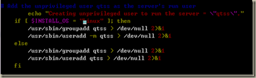
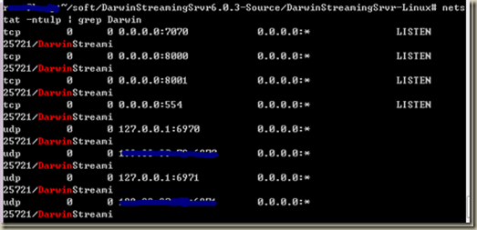
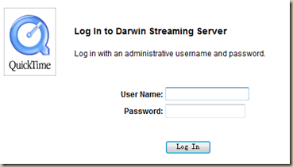

Linux编译安装Darwin Streaming Server 6.0.3
买回来VPS后就一直想在上面搭建一个流媒体服务，在网上搜索了很多资料，大部分都是介绍Linux中安装Darwin Streaming Server 5.5.5版本，因为这个版本提供了针对linux的安装脚本。但既然官网有了6.0.3版本，于是果断尝试安装最新的版本。
1、什么是Darwin Streaming Server
目前主流的流媒体服务器有微软的windows media server、RealNetworks的Helixserver和苹果公司的Darwin Streaming Server. 微软的windows media server只能在windows2000 server和windows 2003 server下使用，不在考虑之列。RealNetworks的Helixserver是一款跨平台的软件，功能也很强大，但并非免费软件。
Darwin Streaming Server简称DSS。DSS是Apple公司提供的开源实时流媒体播放服务器程序。整个程序使用C++编写，在设计上遵循高性能，简单，模块化等程序设计原则，务求做到程序高效，可扩充性好。并且DSS是一个开放源代码的，基于标准的流媒体服务器，可以运行在Windows NT和Windows 2000，以及几个UNIX实现上，包括Mac OS X，Linux，FreeBSD，和Solaris操作系统上的。
2、在Linux中编译安装Darwin Streaming Server
首先需要进行一些必要的准备工作：
apt-get install patch make gcc g++
准备好软件暂存的目录，并从官网下载软件的源码：
mkdir soft
cd soft
wget http://dss.macosforge.org/downloads/DarwinStreamingSrvr6.0.3-Source.tar
源码下载完成后，需要解压tar包，
tar xvf DarwinStreamingSrvr6.0.3-Source.tar
给源码安装补丁文件，进入DarwinStreamingSrvr6.0.3-Source目录，并打补丁：
cd DarwinStreamingSrvr6.0.3-Source
wget http://www.abrahamsson.com/dss-6.0.3.patch
patch -p1 < dss-6.0.3.patch
执行
./Buildit
编译完成后，我们来生成linux下的dss安装包
执行 ./buildtarball
生成DarwinStreamingSrvr-Linux.tar.gz
解压缩
tar -zxvf DarwinStreamingSrvr-Linux.tar.gz
cd DarwinStreamingSrvr-Linux
对Install文件做修改
if [ $INSTALL_OS = "Linux" ]; then
/usr/sbin/useradd -M qtss > /dev/null 2>&1
else
/usr/sbin/useradd qtss > /dev/null 2>&1
fi
将-M修改成-m

执行./Install
Please enter a new administrator user name: 【新管理员】
Please enter a new administrator Password: 【密码】
查看是否安裝成功
ps aux | grep Darwin(查看流媒体服务器的进程)
root ... ... ... /usr/local/sbin/DarwinStreamingServer
qtss … … … /usr/local/sbin/DarwinStreamingServer
netstat -ntulp | grep Darwin(查看流媒体服务器的端口)

3、启动 Darwin Streaming Server
sudo /usr/local/sbin/DarwinStreamingServer
启动 Web 管理介面 (tcp port 1220)
sudo /usr/local/sbin/streamingadminserver.pl
ps. 以上两项在刚安装好的时候会自动启动，不需手动执行
小技巧：自动启动流媒体服务器的方法：
自动运行流媒体服务器序非常简单，把上述命令添加在/etc/rc.d/rc.local脚本中即可。
最后在服务器输入 http://你的IP:1220/来访问web管理

默认的媒体文件存放在/usr/local/movies
你可以在web管理面板修改这个路径。
4、访问自己的流媒体服务
可以使用VLC media player这个软件，输入
rtsp://你的IP/sample_100kbit.mp4
来播放默认的测试视频。如果你的网速够给力的话效果还不错 ：)
 微信
微信 支付宝
支付宝